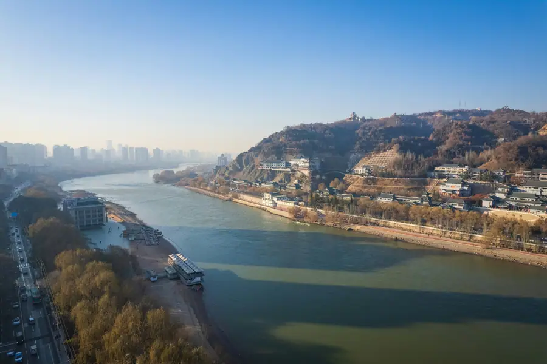
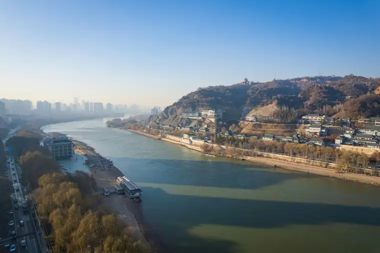
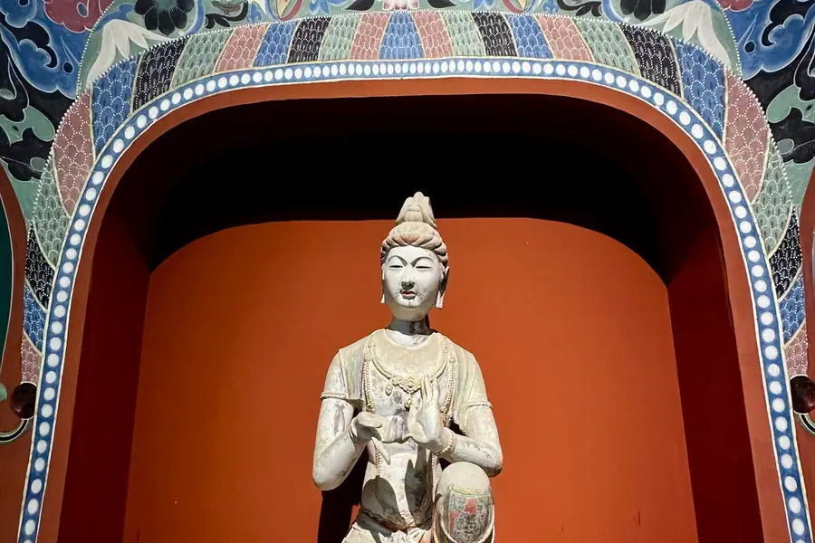

Lanzhou Airport Transfer & Private Car
LHW Zhongchuan Airport to downtown, Yellow River waterfront, and Silk Road gateway with licensed professional driver. China northwestern crossroads. Fixed price. Reliable Lanzhou car service for every trip.
Lanzhou in Pictures
Real scenes from Lanzhou — landmarks, streets and everyday life.



Lanzhou at a Glance
Northwest China "River City" — where the Yellow River flows through the city and the Silk Road begins. Lanzhou beef lamian noodles, ancient waterwheels, and Buddhist cave art.
Name Origin
The name "Lanzhou" (兰州) comes from the Lan River (湟水), a historic name for the Que River that joins the Yellow River here. Historically known as Jincheng (金城, "Golden City") during the Han Dynasty, Lanzhou has been a strategic military and commercial hub for over 2,200 years as the eastern gateway to the Silk Road.
Education & Culture
Lanzhou is the educational center of Gansu Province. Lanzhou University (兰州大学, founded 1909) is a top-tier national university, particularly strong in grassland science, Dunhuang studies, and Northwest ethnic studies. The Northwest University for Nationalities specializes in Tibetan, Mongolian, and Hui cultural studies.
Transportation
Lanzhou is a major transportation hub for Northwest China. Lanzhou Zhongchuan International Airport (LHW) is 70 km north of the city, serving domestic and some Central Asian routes. Lanzhou Railway Station and Lanzhou West Station are major nodes on the Eurasian Continental Bridge. The Lanzhou Metro (2 lines) serves the city center. No direct metro connects the airport — our private car is the most comfortable option.
Natural Environment
Lanzhou sits in a long, narrow valley on the Yellow River, flanked by mountains on both sides — the Qilian Mountains to the south and the Helan Mountains to the north. The city is nicknamed the "River City" (黄河之城) because the Yellow River flows right through the urban center. The climate is arid to semi-arid, with low humidity and plenty of sunshine year-round.
Maps & Transit
Plan your route before you arrive.
Best Time to Visit Lanzhou
The climate record of Lanzhou decides when the city is at its most comfortable to walk.
The annual average temperature is 11.2 °C; annual rainfall averages 327 mm; The climate pattern includes continental influence, the monsoon, drought, dust storms, highland conditions.
Spring
Summer
Autumn
Winter
Top Lanzhou Attractions
From Yellow River waterfront strolls to Silk Road cave temples — discover China northwestern crossroads.
Popular Lanzhou Routes
Fixed-price private car service for Lanzhou most popular journeys.
🏯 LHW Airport → City Center
From ¥229($32.25)~70 km • 1-1.5 hours • Economy/Business/MPV
Lanzhou Zhongchuan International Airport (LHW) is 70 km north of the city. Your driver meets you at the arrival hall with a name board, tracks your flight, and drives you directly to your hotel. No bus or taxi queues — door-to-door comfort.
🛕 Bingling Temple Day Trip
From ¥229($32.25)~100 km • 3 hours each way • Full day
Visit the UNESCO-quality Buddhist cave temples by boat across the Yellow River reservoir. Your driver takes you to the boat pier, waits while you explore the caves, and returns you to Lanzhou. One of Northwest China most extraordinary cultural experiences.
🌊 Yellow River + Noodle Museum Tour
From ¥229($32.25)4-5 hours • City tour • Business vehicle
Scenic drive along the Yellow River waterfront, crossing the Zhongshan Bridge, visiting the waterwheel park, and touring the Lanzhou Beef Lamian Noodle Museum. Your driver knows the best time to visit each spot.
🏜️ Gobi Desert Gateway Day Trip
From ¥273($38.45)~150 km • 2 hours • Full day desert experience
Drive to the edge of the Gobi Desert from Lanzhou — see sand dunes, ride camels, and experience the vast open landscapes of Northwest China. The journey passes through dramatic loess plateau terrain.
Transparent Pricing in Lanzhou
Published rates, no estimate games. Check the numbers yourself before you book — and the price you see is the price your driver is paid from.
Fixed Price List — 兰州 (Lanzhou)
Published rates from our 2026 quote sheet. Renminbi first, USD for reference at 1 USD = ¥7.10. Every price below already includes tolls, parking, driver service and free airport waiting time — nothing is added on the day.
🛬 Airport & Intercity Transfer
One flat fare for airport pickup, drop-off or city-to-city — intercity costs the same as the airport run. 35 km included; beyond that we charge by the minute and the kilometre at the rates shown.
| Vehicle | Seats | Bags | Fixed fare | USD | Beyond 35 km |
|---|---|---|---|---|---|
| 4座 经济型专车 | 4 | 2 | ¥229 | ≈ $32.25 | ¥1.22/min · ¥5.3/km |
| 4座 舒适型专车 | 4 | 2 | ¥328 | ≈ $46.2 | ¥1.34/min · ¥5.87/km |
| 6座 商务车 | 6 | 3 | ¥418 | ≈ $58.87 | ¥1.43/min · ¥6.24/km |
| 8-11座 商务车 | 11 | 4 | ¥655 | ≈ $92.25 | ¥1.86/min · ¥8.11/km |
| 12-18座 商务车 | 18 | 4 | ¥796 | ≈ $112.11 | ¥2.07/min · ¥9.05/km |
| 19-55座 大巴 | 55 | 5 | ¥983 | ≈ $138.45 | ¥2.36/min · ¥10.3/km |
🚗 Hourly Private Charter
Book the car and the hours, keep the car for the day. Unused kilometres can be carried into the next tier, so a long day never turns into a penalty. The driver stays with you — you set the stops.
| Vehicle | 2h / 35km | 4h / 50km | 6h / 75km | 8h / 100km | 10h / 125km |
|---|---|---|---|---|---|
| 4座 专车 | ¥273 | ¥455 | ¥546 | ¥663 | ¥819 |
| 6座 商务车 | ¥351 | ¥598 | ¥715 | ¥858 | ¥1066 |
| 8-11座 商务车 | ¥505 | ¥861 | ¥1030 | ¥1236 | ¥1535 |
| 12-18座 商务车 | ¥607 | ¥1033 | ¥1236 | ¥1483 | ¥1842 |
| 19-55座 大巴 | ¥728 | ¥1240 | ¥1483 | ¥1779 | ¥2210 |
Why travellers book Lanzhou with Chinawheely
Six things you get with every booking — in Lanzhou and across all 346 cities on the platform.
Licensed travel agency, not a ride-hail app
Chinawheely is a registered travel agency (L-HUB-101603). Your booking is a travel contract with a licensed operator — not a broker handing your number to whoever answers the phone.
One locked price, shown before you pay
The price you see is the price you pay. Tolls, parking, driver service and airport waiting time are already inside it. No surge pricing, no meter, no cash-on-the-day surprise.
Flight tracked, waiting time on us
We watch your flight number in real time. If it lands late or is delayed, your driver shifts with it and the waiting time stays on us — not on your bill.
A licensed driver who knows the city
Every car is driven by a professional local driver who knows the routes, the shortcuts and the parking that actually works near the attractions — with English communication and a name board on arrival.
Free changes up to 48 hours before
Plans move. Reschedule or cancel any booking free of charge up to 48 hours before your scheduled pickup, straight from your confirmation link.
A real human on WhatsApp, 8AM–12AM Beijing time
One message reaches a person who can re-price, re-route or re-plan your trip on the spot. No ticket queue, no chatbot loop.
Book Lanzhou at the published price
Pick your vehicle, see the fare line by line, and pay by PayPal or Alipay. Free changes up to 48 hours before pickup — or ask on WhatsApp and we will hold a car for you.
Getting to Lanzhou: Airports & Railway Stations
Getting to Lanzhou by air, rail, or road
Airport
🌊 Lanzhou Zhongchuan International Airport (LHW)
North of the city • 70 km to city center • 1-1.5 hours by road
LHW is Gansu Province main aviation gateway. It has two terminals: T1 (domestic and some international) and T2 (domestic, mainly China Eastern and China Southern). The airport is located 70 km north of the city on the Loess Plateau — there is no metro or direct rail connection. By road, expect 1 to 1.5 hours to central Lanzhou.
🏯 Airport Tips
What to know before you land
There is no duty-free shopping area inside the terminal. Wi-Fi is available but may require Chinese phone number verification. For international travelers, it is worth having your driver contact details ready before landing — our service includes WhatsApp coordination.
Railway Stations
🏝️ Lanzhou West Station (兰州西站)
High-speed hub • Western district
The main high-speed rail station on the Beijing-Lanzhou and Lanzhou-Urumqi HSR corridors. From here, Xian is 3 hours, Beijing is 6 hours, and Urumqi is 7 hours. Our driver can meet you at the station exit.
🏝️ Lanzhou Railway Station (兰州站)
Central station • Near Yellow River
Located near the Yellow River waterfront and Zhongshan Bridge, this is the most centrally located station. It serves conventional and some high-speed trains. A private car pickup is recommended.
🏝️ Lanzhou East Station (兰州东站)
Local trains • Eastern district
Serves regional and conventional trains within Gansu Province. Convenient for eastern city districts but less important for inter-city travelers. Pre-book a pickup recommended.
🗼 Need a Station Pickup?
We meet you at the exit with a name board and help with luggage.
Book Station TransferLanzhou Best Photo Spots
Capture China northwestern crossroads from its most scenic angles.
⛰️ Zhongshan Bridge at Sunset
Best at golden hour
The Yellow River glows gold at sunset and the Zhongshan Bridge is beautifully silhouetted against the orange sky. The best viewpoint is from the southern riverbank near the waterwheel park.
🌊 Yellow River Waterwheels at Dawn
Best at sunrise
The ancient waterwheels (水车) along the riverfront are most photogenic in the early morning light, when the water is calm and mist rises from the river. The surrounding willow trees add atmosphere.
🏛️ Gansu Bronze Horse at Museum
Best anytime
The famous Gansu bronze horse (马踏飞燕) — one of China most iconic archaeological finds. The museum glass atrium provides excellent lighting for photography. Free admission.
🛕 Bingling Temple Caves by Boat
Best on a clear morning
The dramatic canyon approach by boat, with cliffs rising from the Yellow River reservoir, creates stunning landscape photos. The cave exteriors are unforgettable.
⛰️ Taizishan Island Riverside
Best in the evening
The willow-lined southern bank of Taizishan Island is a favorite for evening photographers. The sunset over the Yellow River, with the city skyline in the background, is a classic Lanzhou image.
🏝️ Lanzhou Beef Lamian Hand-Pulled
Best at the Noodle Museum
Watching master noodle makers pull lamian by hand — stretching and folding the dough into perfect strands — is mesmerizing. The Noodle Museum has a glass-walled kitchen where you can photograph the entire process.
Food & Shopping in Lanzhou
Must-Try Lanzhou Cuisine
Lanzhou Beef Lamian (兰州牛肉拉面)
China most famous noodle soup. Clear beef broth, hand-pulled lamian noodles in three thicknesses, tender beef slices, white radish, and cilantro. Every bowl is made to order. The best shops open at 6AM and draw queues of locals. Your driver knows the most authentic spots away from tourist areas.
Hand-Grilled Liangpi (凉皮)
Cold rice noodle sheets with a kick of chili oil, garlic, cucumber, and soybeans. A popular summer dish throughout Gansu, sold at street carts and small restaurants. Refreshing, spicy, and addictively good.
Yangrou Paomo (羊肉泡馍)
Lamb broth poured over torn flatbread (paomo), served with lamb meat and pickled vegetables. A hearty northwestern specialty. Best at traditional Muslim restaurants in the Nanmen (South Gate) area.
Hei Guo Noodles (黑枸杞面)
A Lanzhou specialty — noodles made with black wolfberry (hei guo qi), a superfruit grown in the Qilian Mountains. The purple noodles are as striking as they are nutritious. Found at select specialty restaurants near the Nanmen market.
Shopping Destinations
Nanmen Market (南关什字)
Lanzhou most famous night market and shopping district, near the Nanmen gate. A maze of stalls selling local snacks, dried fruits, nuts, and Northwest Chinese crafts. The evening energy is electric.
Zhangye Road Pedestrian Street
Lanzhou main pedestrian shopping street, lined with international brands, local boutiques, and cafes. The surrounding streets have electronics markets and department stores.
What to Buy in Lanzhou
Lanzhou Hei Gu Qi (Black Wolfberry)
The finest quality black wolfberry (黑枸杞) in China grows in the Qilian Mountain region near Lanzhou. Prized for its high anthocyanin content and used in tea. Available at the Nanmen market and specialty tea shops.
Gansu Tibetan Thangka Paintings
Traditional Tibetan Buddhist scroll paintings (唐卡) featuring mandalas, deities, and spiritual symbols. Available at specialty art shops near the Gansu Provincial Museum and the Nanmen market area.
Dunhuang Desert Sand Art
Intricate bottle artworks depicting desert scenes, dunes, and camels, filled with colored sand from the Gobi Desert. Popular souvenirs made by local artisans. Available at craft shops along the Yellow River waterfront.
Lanzhou Lai Tang Yuan (赖汤圆)
Traditional glutinous rice dumplings in osmanthus syrup, a Lanzhou dessert specialty since 1894. Packaged gift boxes available at traditional confectionery shops. A sweet edible souvenir.
Intangible Cultural Heritage & Living Crafts of Lanzhou
Meet the traditional arts that have defined Lanzhou and the Silk Road for centuries.
Lanzhou Lamian Noodle Making
Registered intangible cultural heritage. The art of hand-pulled lamian involves stretching and folding wheat dough into hair-thin noodles in a matter of seconds. Master noodle makers train for years to achieve the perfect texture and elasticity. Lanzhou has hundreds of lamian masters who keep this 200-year tradition alive.
Where to see it: Lanzhou Beef Lamian Noodle Museum, or any authentic lamian restaurant where you can watch noodles pulled to order.
Gansu Tibetan Thangka Painting
Thangka (唐卡) are Tibetan Buddhist scroll paintings made with mineral pigments on cotton or silk. Gansu, as a crossroads of Tibetan and Han Chinese culture, has a strong tradition of thangka painting, particularly in the Amdo Tibetan region. Each painting can take months or years to complete.
Where to find it: Specialty art shops near the Gansu Provincial Museum and the Nanmen market.
Yellow River Waterwheel Construction
The traditional waterwheel (水车) is Lanzhou most distinctive cultural symbol. These large wooden irrigation wheels, dating back centuries, use the Yellow River current to lift water to farmland along the banks. Master craftsmen who can build and maintain the traditional wheels are increasingly rare.
Where to see it: Yellow River Waterwheel Park along the riverside greenway in central Lanzhou.
Dunhuang Shadow Puppetry
Shadow puppet theater (皮影戏) is a 2,000-year-old tradition in Gansu and the broader Silk Road region. Intricately carved leather puppets are manipulated behind a backlit screen to create the illusion of moving figures. Stories typically drawn from Chinese folklore and history.
Where to see it: Cultural performances at the Gansu Provincial Museum and during festivals at the Nanmen market area.
Silk Road Folk Music (Gansu Hua Er)
Hua Er (花儿) is a folk song tradition sung in the Gansu, Qinghai, Ningxia, and Xinjiang region. Sung in local dialects and featuring improvised lyrics, Hua Er is typically performed outdoors in the mountains during festivals. It was inscribed as a national intangible cultural heritage in 2009.
Where to hear it: Outdoors during Spring Festival and local festivals, or at cultural shows in the city.
Muslim Silverware & Engraving
Lanzhou has a significant Hui Muslim community whose metalworking artisans create finely engraved silver and brass items — tea trays, cups, and decorative pieces. The craft combines Islamic geometric patterns with Chinese motifs, unique to the region.
Where to find it: Specialty metalwork shops in the Nanmen market area and along the western shopping streets.
Lanzhou Local Secrets
Insider tips to help you experience Lanzhou like a local.
Eat Lamian Before 8 AM
Lanzhou locals eat lamian for breakfast. The best shops open at 6AM and are packed by 7AM. By 9AM the best bowls are sold out. Ask your driver to take you to the most popular morning spot near your hotel — it is an unforgettable introduction to the city.
Cross the Zhongshan Bridge at Sunset
The iron bridge looks completely different at sunset versus midday. Walk from the south bank to the north bank, then back, while the light changes. The northern bank has a small park with a great view back toward the illuminated bridge.
Seasonal Highlights
Spring: Fresh hei gu qi (black wolfberry) harvest. Summer: Evening riverside culture at its peak. Autumn: Yellow River at its fullest, best for boat trips to Bingling Temple. Winter: Warm lamian and lamb paomo.
Ask Your Driver for Muslim Quarter
The Nanmen area is Lanzhou historic Hui Muslim quarter — a fascinating area of narrow streets, mosques, and halal restaurants. Your driver can introduce you to the best lamb paomo restaurant and the oldest lamian shop in this area.
Book Bingling Temple Early
Bingling Temple boat trips operate on a fixed schedule and the first boat leaves around 8AM. The earlier you go, the quieter the caves. Your driver can pick you up at your hotel early and ensure you make the first departure.
Combine Bingling Temple + Desert
Both Bingling Temple and the Gobi Desert gateway are in the same direction from Lanzhou. A full-day private car can take you to both — start with the cave temples by boat in the morning, then drive to the desert in the afternoon.
Day Trips from Lanzhou
Explore Gansu province and the Silk Road with a private car and licensed professional driver.
Plan Your Lanzhou Day Trip
Custom itineraries, flexible timing, and door-to-door service with a licensed professional driver.
Book a Lanzhou Day TripSeasons Overview
The climate record of Lanzhou.
The annual average temperature is 11.2 °C; annual rainfall averages 327 mm; the climate pattern includes .
Season note 1
Season note 2
Useful Chinese Phrases for Lanzhou
A few words go a long way with your driver and locals.
Ni hao
你好
Hello — Your driver will appreciate the effort. Lanzhou people are warm and welcoming.
Xie xie
谢谢
Thank you — Use it often. Politeness is appreciated everywhere in Lanzhou.
Wo yao chi Lanzhou la mian
我想吃兰州拉面
I want to eat Lanzhou lamian — Say this to your driver and watch his face light up as he takes you to the best spot.
Hen hao chi
很好吃
Very delicious — The universal compliment for Lanzhou lamian and lamb paomo. Your driver and restaurant owner will love hearing it.
Qu Bingling si, you duoshao qian?
去炳灵寺，多少钱？
How much to go to Bingling Temple? — Useful for negotiating boat trips at the pier.
Zai na li ke yi zuo chuan?
在哪里可以坐船？
Where can I take a boat? — Ask at the Bingling Temple boat dock.
Book Your Lanzhou Airport Transfer
Fixed price, licensed professional driver, free flight tracking. From LHW Zhongchuan Airport to any Lanzhou hotel or attraction.
Get Instant QuoteQuestions? WhatsApp +86-155-2777-1775
More China destinations
Compare routes, published prices and local driver tips across the cities we cover.